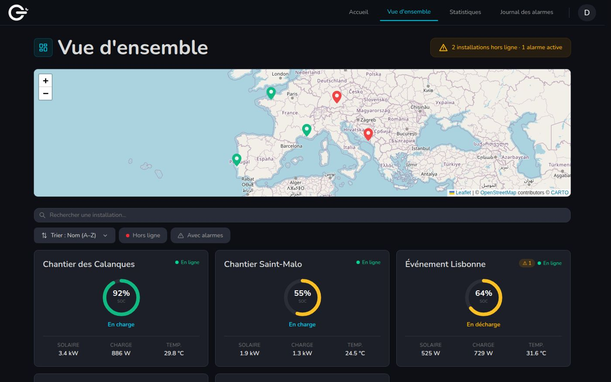
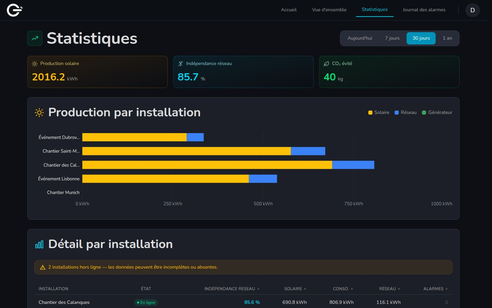
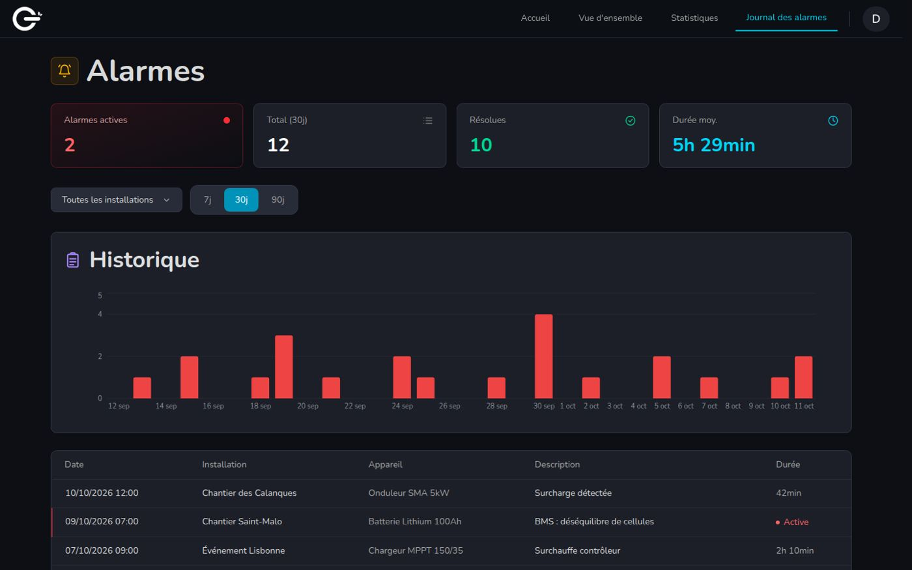
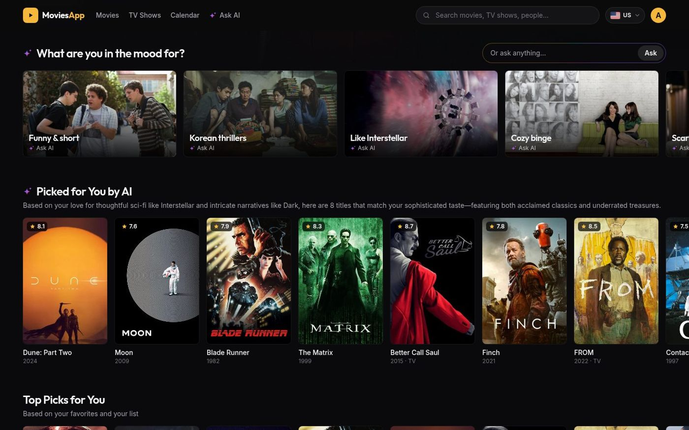
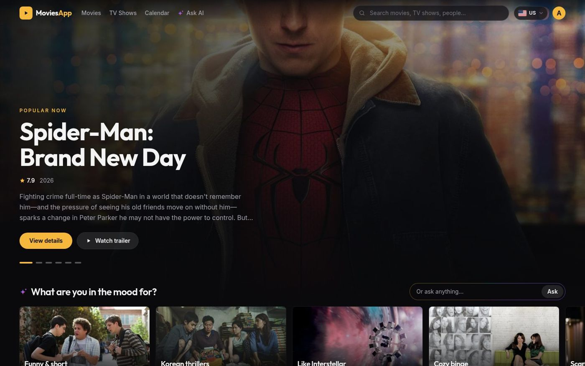
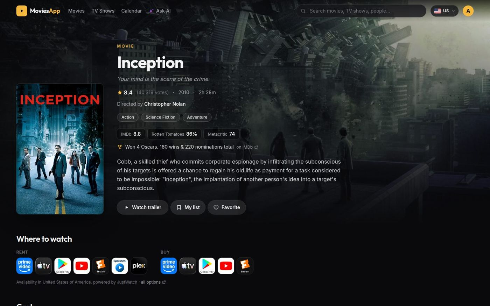
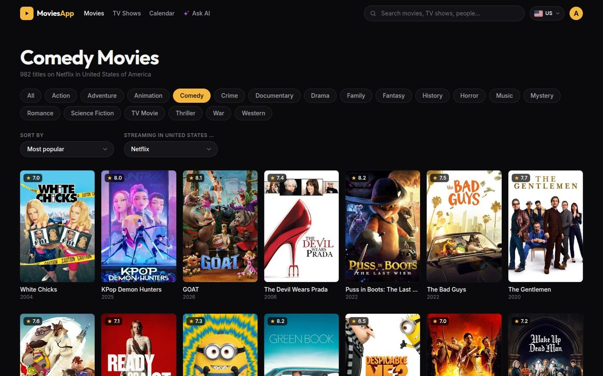
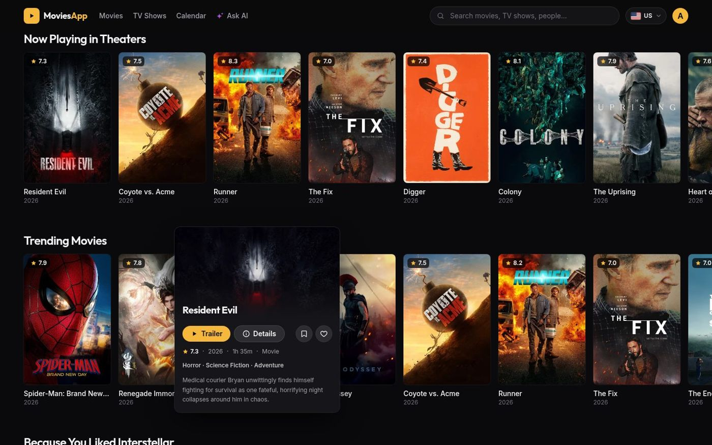

Agents and orchestration
I design agents with clear roles (planner, implementer, reviewer) and coordinate them on independent tasks, each with only the context it needs.
Open to a full-time role · Paris area
Full-stack developer building with AI agents
I build production web apps with React and Python, and I run my whole development process with AI agents: specs, implementation, tests and code review.
About
Full-stack engineer with 3 years of experience shipping real-time apps in production at Olenergies: React interfaces, Python/FastAPI backends, Docker, Azure and CI/CD.
I treat AI agents as part of the team. I write the spec first, then orchestrate agents that plan, implement, test and review the code, and I stay accountable for every line that ships.
AI workflow
Every feature follows the same loop. Agents do the heavy lifting; specs and tests keep them honest.
Write what the feature must do and how to check it.
Agents turn the spec into a plan and small tasks.
Sub-agents implement tasks in parallel, with tests.
Reviewer agents and I check correctness and edge cases.
CI/CD runs the tests and deploys.
I design agents with clear roles (planner, implementer, reviewer) and coordinate them on independent tasks, each with only the context it needs.
I build Model Context Protocol servers that connect agents to real tools and data: APIs, databases and internal services.
Spec, plan and tasks come before code (GitHub Spec Kit). The docs carry the context, so any session or agent can pick up the work.
Project rules, skills, hooks and automated code review set up so the agent follows the team's conventions.
Experience
Olenergies · Bagnolet, France
Olenergies · Montreuil, France
Stack
Projects



Real-time monitoring of solar generators and lithium batteries, wherever they are deployed. Live data over WebSocket, permissions per site and a secure remote console to the devices.





Movie and TV explorer with a Claude agent that recommends what to watch tonight. The agent uses the app's own API as tools and only suggests titles it actually found.
Personal finance app for Android, built end to end with an agentic workflow: specs first, Claude Code for the implementation and reviewer agents on the money logic.
Dashboard that tells you what to play today from your Steam library. The LLM's picks are checked against your real games, so it can't invent any.
Contact
Have a role or a project in mind? Write to me.